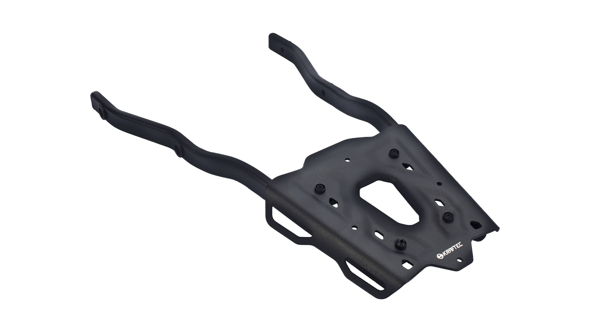
Proyecto 02 · KTM · Integración OEMProject 02 · KTM · OEM integration
Portaequipaje Duke 250 / 390Duke 250 / 390 luggage rack
Portaequipaje para la KTM Duke 250 / 390, desarrollado para el programa de accesorios OEM. Busca liviandad y rigidez sin romper la línea de la moto, con una placa de aluminio cortada por láser y estampada sobre laterales tubulares.
Luggage rack for the KTM Duke 250 / 390, developed for the OEM accessory program. It pursues low weight and rigidity without breaking the bike's lines, with a laser-cut and stamped aluminum plate on tubular side rails.
Proporción e integraciónProportion and integration
El punto de partida fue que el portaequipaje acompañe la línea de la moto en lugar de verse agregado. Los bocetos y las primeras pruebas físicas sobre la moto definieron proporciones, puntos de montaje y la integración general.
The starting point was a rack that follows the bike's lines instead of looking bolted on. Sketches and early physical tests on the motorcycle defined proportions, mounting points and overall integration.
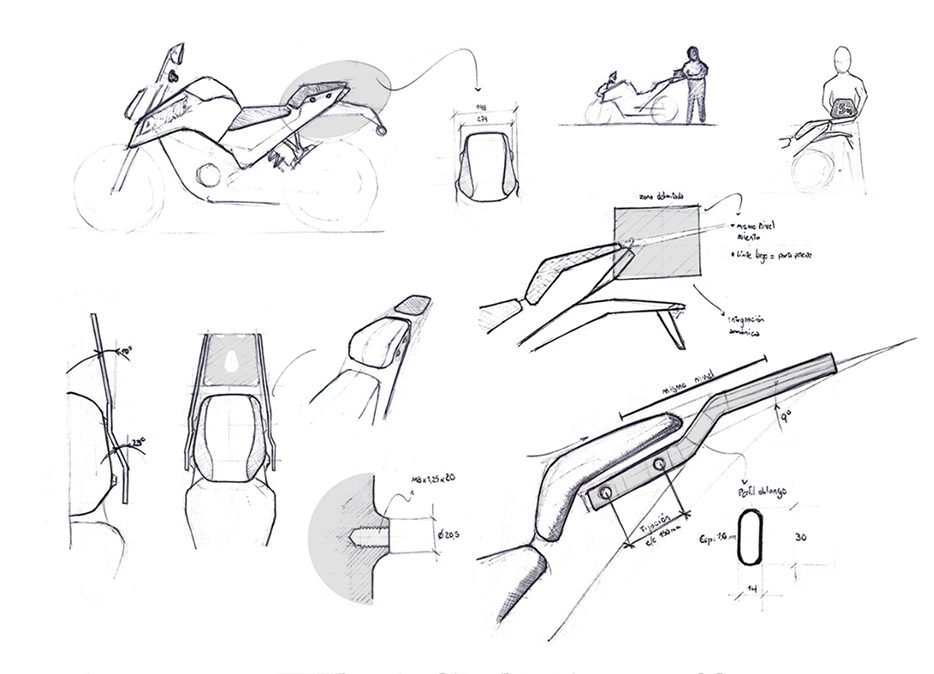
Un conjunto modularA modular assembly
El conjunto combina una placa cortada por láser y estampada con laterales tubulares. Para fijarlo al chasis diseñé un buje remachado que se deforma y se traba dentro de los tubos: una unión firme y repetible, sin soldar sobre la moto.
The assembly combines a laser-cut, stamped plate with tubular side rails. To fix it to the frame I designed a riveted bushing that deforms and locks inside the tubes: a strong, repeatable joint with no welding on the bike.
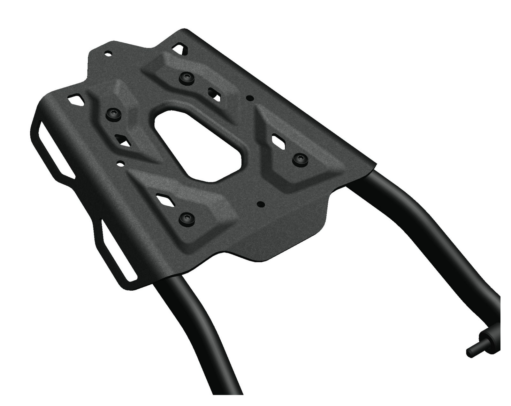
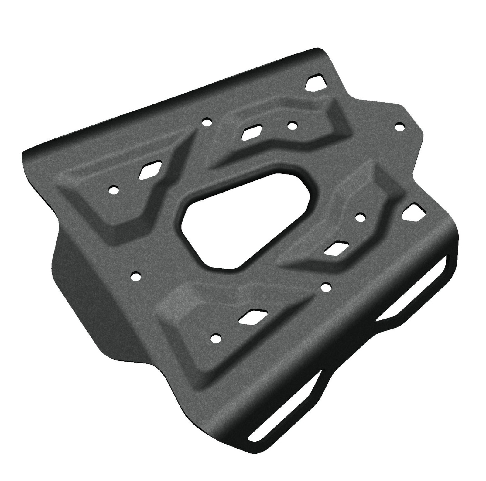
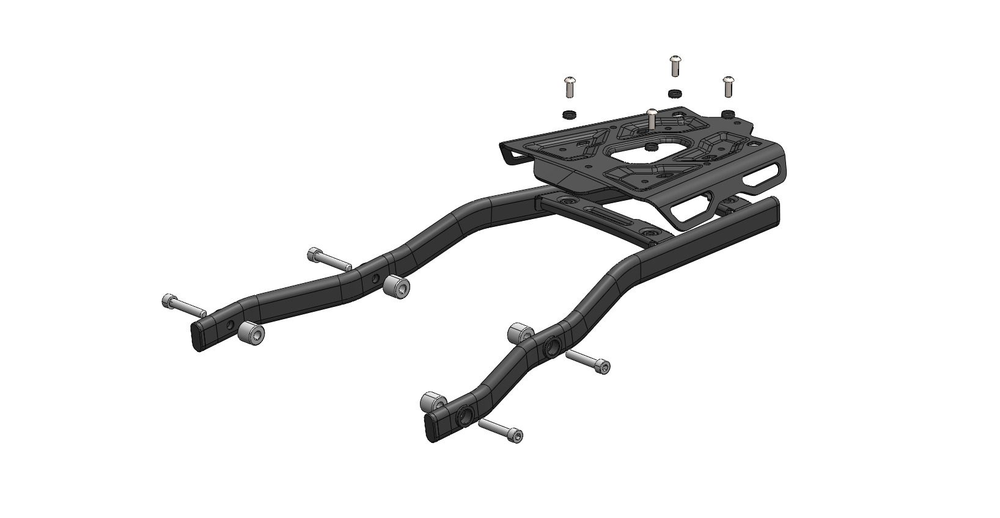
Matrices propiasIn-house dies
Las matrices de estampado se diseñaron en la empresa y se mecanizaron por CNC para producción. Diseñar la pieza y su herramental en paralelo permitió llevar la geometría a algo que se pudiera conformar igual en cada unidad.
The stamping dies were designed in-house and CNC machined for production. Designing the part and its tooling in parallel kept the geometry within what could be formed consistently on every unit.
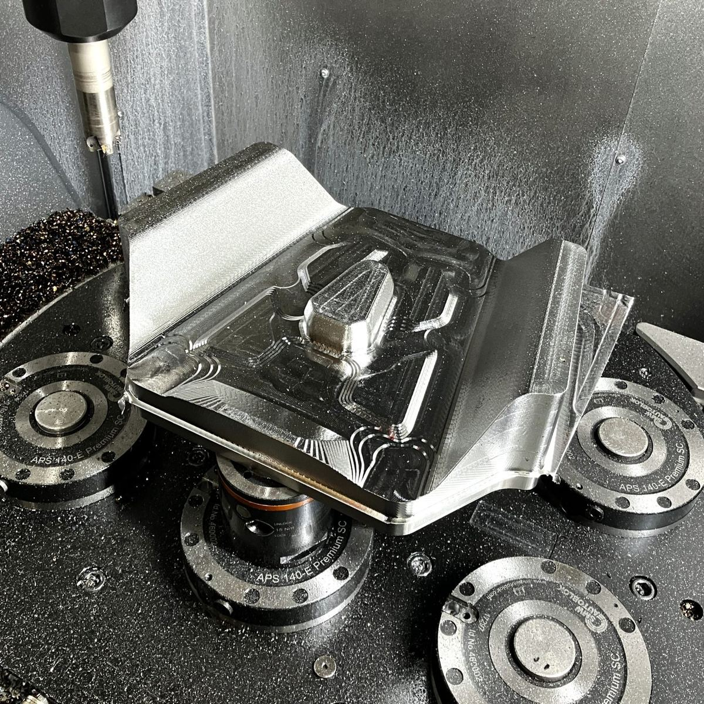
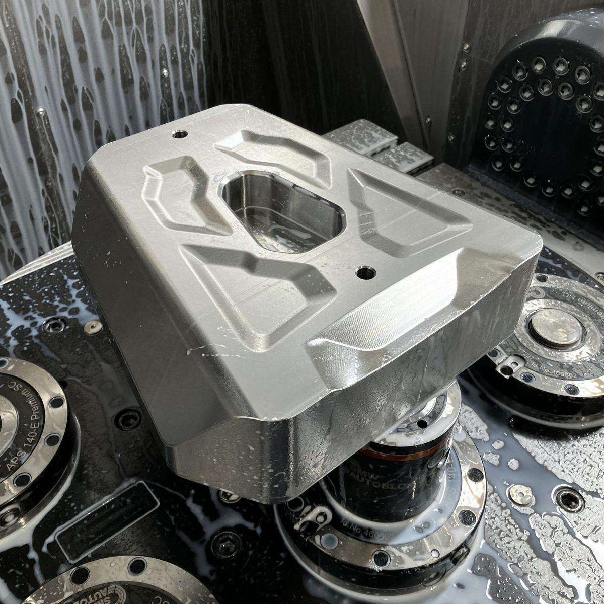
Mecanizado CNC de la matriz.CNC machining of the die.
Validación sobre la motoValidation on the bike
Los prototipos se probaron sobre la moto para verificar calce, comportamiento estructural y armado, y confirmar que el proceso de fabricación propuesto era viable antes de pasar a serie.
Prototypes were tested on the motorcycle to check fitment, structural behavior and assembly, confirming the proposed manufacturing process was viable before moving to series production.
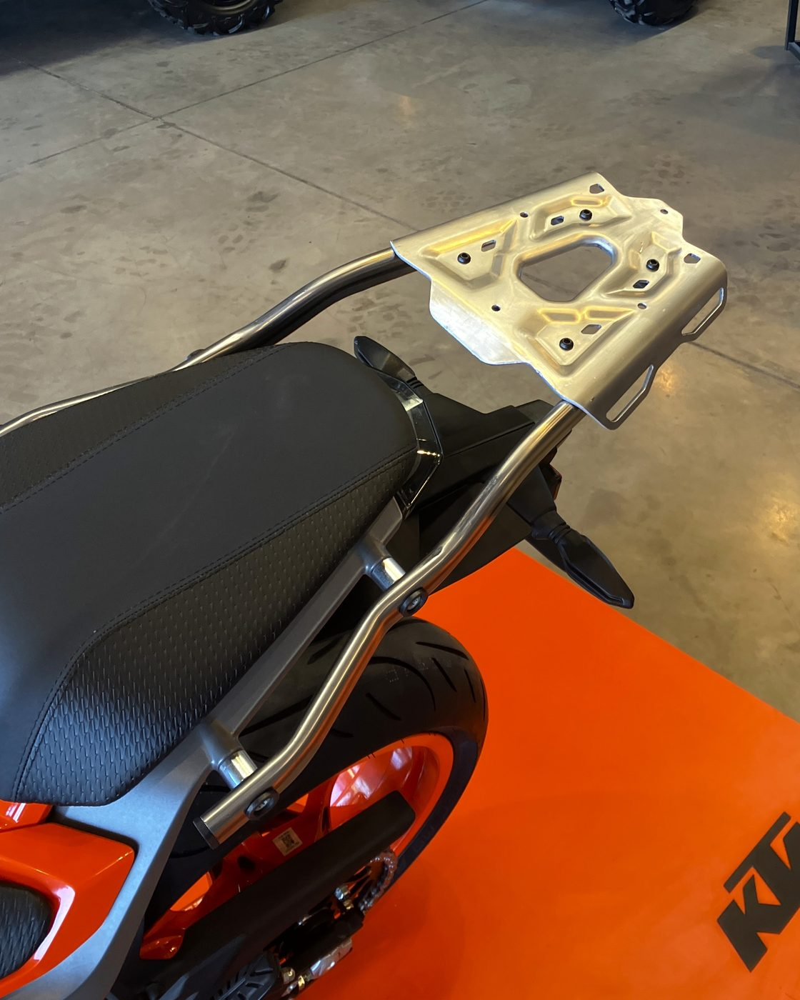
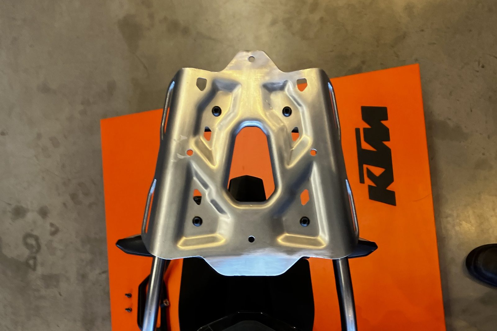
En serieIn series production
Desarrollado para producción en serie dentro del programa de accesorios OEM, con piezas iguales unidad tras unidad. El conjunto terminado mantiene la coherencia visual con la moto original y sirve tanto para la Duke 250 como para la 390.
Developed for series production within the OEM accessory program, with consistent parts unit after unit. The finished assembly stays visually coherent with the original bike and fits both the Duke 250 and 390.
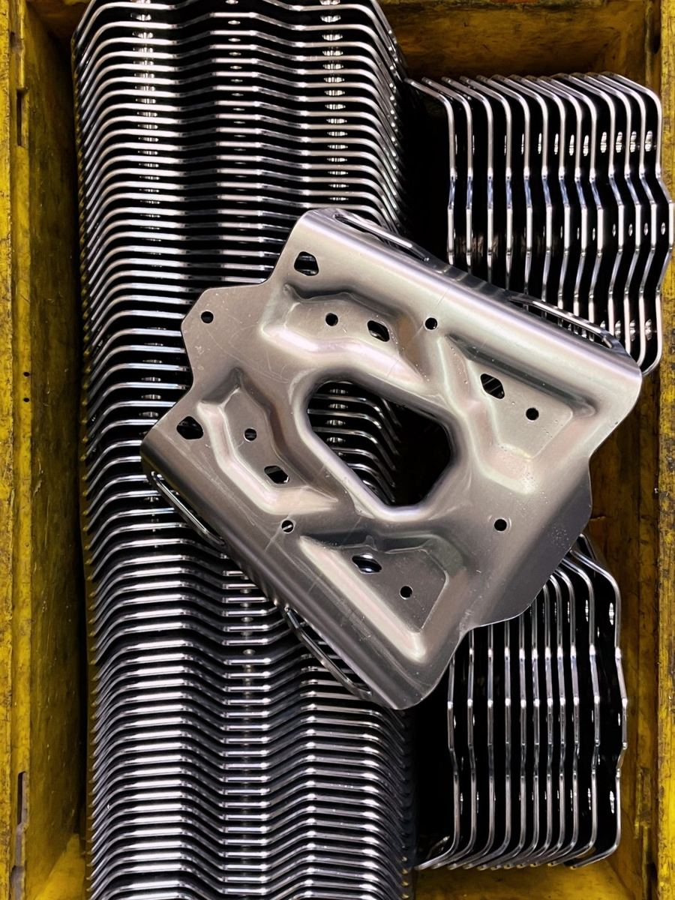
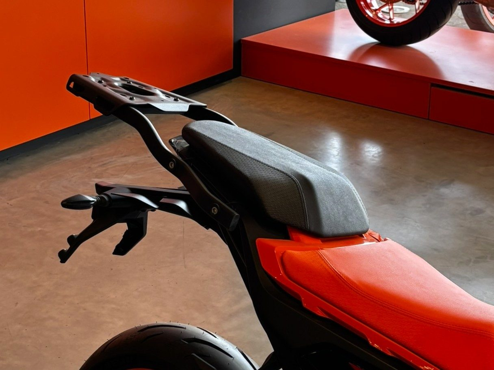
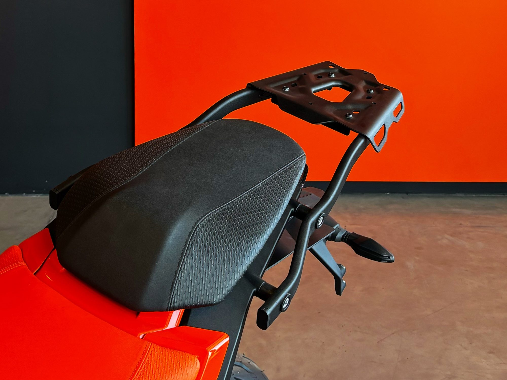